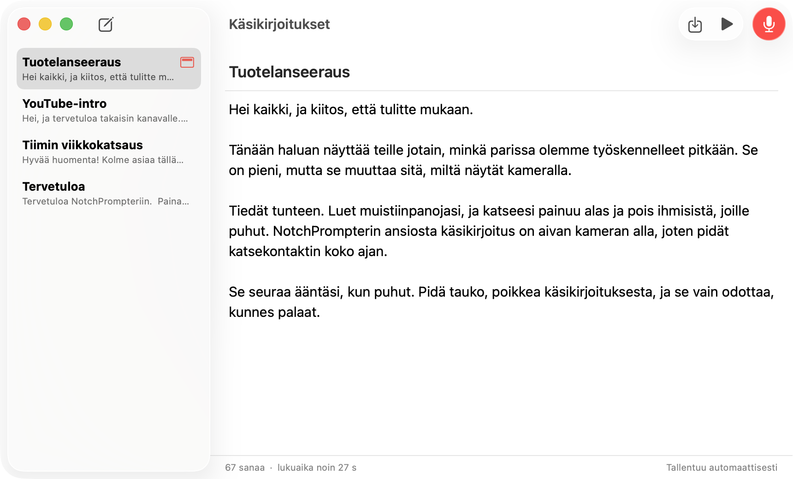
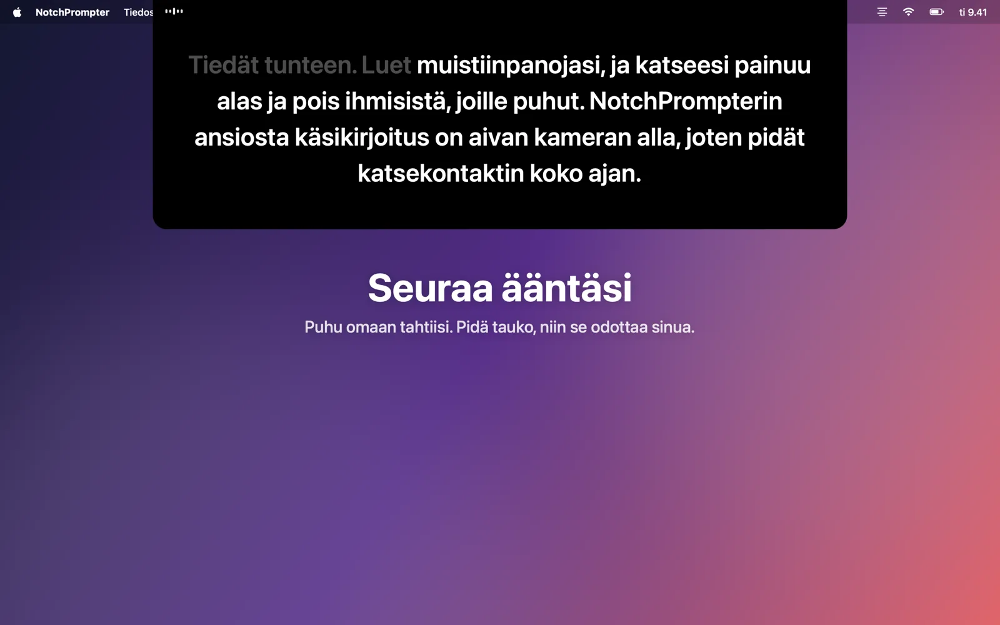
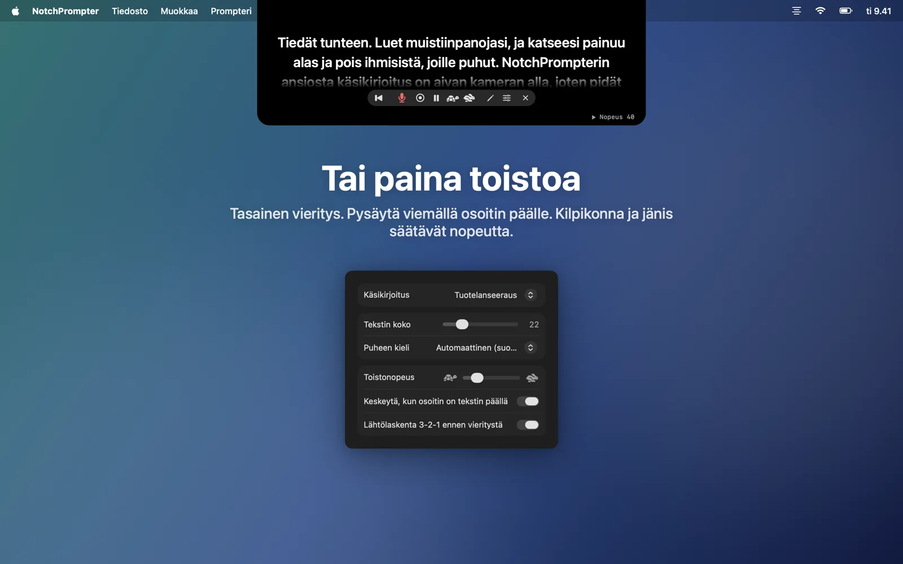
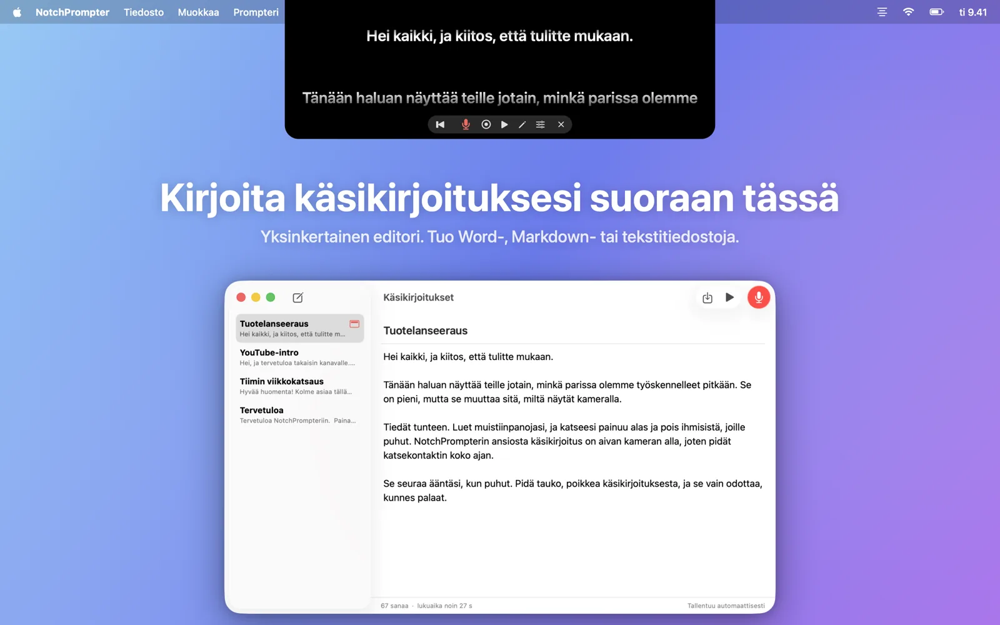
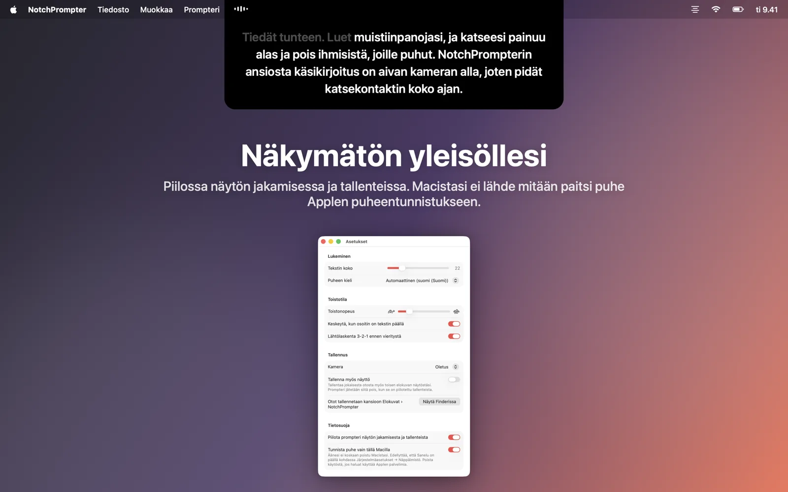

Pidä katsekontakti lukiessasi
NotchPrompter tuo käsikirjoituksesi aivan kameran alle ja seuraa ääntäsi. Millä tahansa kielellä, myös kun hyppäät eteenpäin, ja kokonaan Macillasi.
Ilmainen ja avointa lähdekoodia. macOS 15 Sequoia tai uudempi. Toimii parhaiten MacBookissa, jossa on lovi, ja missä tahansa Macissa, jonka kamera on näytön yläpuolella.
Katso se toiminnassa
Lue, pidä tauko, hyppää eteenpäin. Prompteri pysyy mukana.
Kaikki mitä tarvitset. Ei mitään turhaa.
Pieni musta paneeli kameran alla, muutama selkeä painike, pieni editori käsikirjoituksillesi ja tallennuspainike.
Seuraa ääntäsi
Paina mikrofonia ja puhu. Seuraavat sanat ovat aina aivan kameran alla. Jo sanomasi sanat himmenevät.
Mikä tahansa kieli, automaattisesti
NotchPrompter tunnistaa, millä kielellä käsikirjoitus on, ja kuuntelee sitä. Englanti, norja, saksa, espanja, japani ja kymmeniä muita.
Pysyy mukana, kun hyppäät yli
Jätä lause väliin, vaihda sana, sano ”öö”. Se löytää kohdan, jossa olet, ja hyppää eteenpäin kanssasi. Pidä tauko, niin se odottaa.
Tai paina toistoa
Tasainen vieritys ja 3-2-1-lähtölaskenta. Pysäytä viemällä osoitin päälle, ja säädä nopeutta kilpikonnalla ja jäniksellä.
Sisäänrakennettu editori
Kirjoita ja säilytä kaikki käsikirjoituksesi yhdessä paikassa. Tuo Word-, Markdown-, RTF- tai tekstitiedostoja. Tallentuu automaattisesti.
Kuvaa itsesi
Paina tallennusta, niin voit kuvata itsesi kameralla ja mikrofonilla lukiessasi. Jokainen otto tallennetaan elokuvana Elokuvat-kansioon.
Näkymätön yleisöllesi
Piilossa näytön jakamisessa, kuvakaappauksissa ja tallenteissa. Vain sinä näet sen.
Toimii kokonaan Macillasi
Puhe tunnistetaan Macillasi, ei pilvessä. Ei tiliä, ei seurantaa. Käsikirjoituksesi ja tallenteesi eivät koskaan poistu Macistasi.
Käsikirjoituksesi yhden klikkauksen päässä
Avaa editori klikkaamalla prompterin kynää. Valitse käsikirjoitus, paina mikrofonia ja ala puhua.
- Kirjoita tai liitä käsikirjoitus, tai tuo tiedosto.
- Paina Lue äänellä.
- Katso kameraan ja puhu.

Tehty kameraa varten
Videopuhelut, YouTube, kurssit, webinaarit ja myyntiesittelyt.




Kysymyksiä
Onko se oikeasti ilmainen?
Kyllä. NotchPrompter on ilmainen ja avointa lähdekoodia MIT-lisenssillä. Ei mainoksia, ei tilausta, ei tiliä. Lähdekoodi on GitHubissa, jossa voit ilmoittaa virheistä, ehdottaa ominaisuuksia tai osallistua kehitykseen.
Toimiiko se ilman lovea?
Kyllä. Macissa, jossa ei ole lovea, prompteri roikkuu näytön yläreunasta valikkorivin alla, mikä on silti lähellä kameraa.
Mitä kieliä puheohjaus tukee?
Kymmeniä, muun muassa englantia, norjaa, saksaa, ranskaa, espanjaa, kiinaa ja japania. NotchPrompter tunnistaa, millä kielellä käsikirjoitus on, ja kuuntelee sitä kieltä, joten sinun ei tarvitse asettaa mitään. Voit valita toisen kielen Asetuksissa.
Näkevätkö muut prompterin, kun jaan näyttöni?
Eivät. Oletuksena se on piilossa näytön jakamisessa, kuvakaappauksissa ja tallenteissa. Voit poistaa tämän käytöstä Asetuksissa, jos haluat näyttää sen.
Lähteekö mitään pilveen?
Ei. Puhe tunnistetaan Macillasi (kun Sanelu on laitettu päälle Järjestelmäasetuksissa), eikä NotchPrompterilla ole palvelimia. Puheohjaus ei koskaan tallenna ääntä. Elokuva tallennetaan vain, kun painat tallennusta, ja silloin omaan Elokuvat-kansioosi. Lue tietosuojakäytäntö.
Mitkä ovat näppäinoikotiet?
Klikkaa prompteria ja sitten: Välilyönti toisto/tauko, V ääni, C tallennus, R takaisin alkuun, ↑ ↓ nopeus, + − tekstin koko, E editori, Esc lopeta.